イベント処理 (第 4 回)
| 氏名 | 入佐 啓士
|
|---|
| クラス | 理科 1 類 37 組
|
|---|
| 学生証番号 | J4-220897
|
|---|
□課題4.0 - 4.3節 例 1: マウスイベントによる背景色の変更 background.py
○プログラムリスト
(例題なので省略)
○実行コマンド
$ python background.py
○実行結果
(文字列の表示なし)
初期状態は緑色で、左クリックしている間は赤色になり、マウスを離すと緑色に戻った。
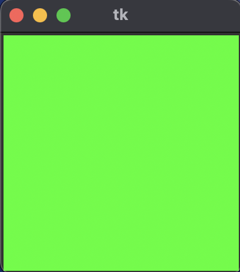
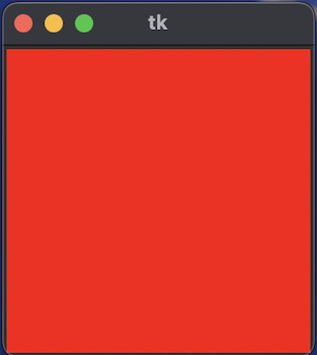
○考察
今回は、canvas内でのマウスイベントに合わせて背景色を変更するプログラムを「Python 3.11.7, Sonoma 14.4.1」で走らせた。
実行結果としては、想定通りマウスをクリックしている間は赤色の背景になっており、ユーザー入力によって状態が変更されるインタラクティブさが確認できた。
今回初めて授業でglobal変数を学んだため、考察としてglobalキーワードを除いたプログラムを作成して、global変数の役割への理解を次のセクションで深めようと思う。
□課題4.0 - 4.3節 例 1-2: マウスイベントによる背景色の変更2 background_02.py
○プログラムリスト
1 from tkinter import * # tkinterモジュールのimport
2
3 W, H = (200, 200) # canvasの幅と高さ
4
5 def pressed(event): # Button1 pressed コールバック関数 # 大域変数 canvas
6 canvas.create_rectangle((2, 2), (W+3, H+3), outline='', fill='#ff0000')
7 # 背景の赤長方形での描画
8 def released(event): # Button1 released コールバック関数 # 大域変数 canvas
9 canvas.create_rectangle((2, 2), (W+3, H+3), outline='', fill='#00ff00')
10 # 背景の緑長方形での描画
11 def main(): # main関数
12 # global canvas # 大域変数 canvas
13 root = Tk() # ルートフレームの作成
14 canvas = Canvas(root, width = W, height = H, bg='#00ff00') # canvasの作成
15 canvas.pack() # canvasの配置確定
16 canvas.bind('', pressed) # Button1 pressed コールバック関数
17 canvas.bind('', released) # Button1 released コールバック関数
18 root.mainloop() # ルートフレームの実行ループ開始
19
20 if __name__ == '__main__': # 起動の確認 (コマンドラインからの起動)
21 main() # main関数の呼出
○実行コマンド
$ python background_02.py
○実行結果
①(main関数のglobal canvasをコメントアウトしていない)の実行結果は、background.pyと全く同じで、クリックによって色が緑から赤へと変化した。
②(main関数のglobal canvasをコメントアウトしている)の実行結果は、初期の緑色のキャンバスは表示できたが、canvasをクリックしたら、以下の画像のようにエラーが発生した。
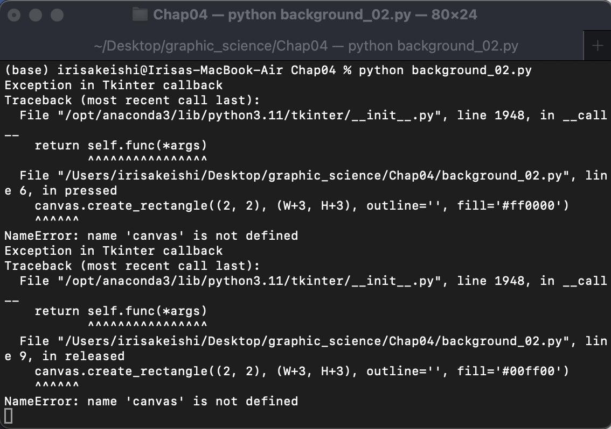
○考察
canvas内でのマウスイベントに合わせて背景色を変更するプログラムのglobalキーワードに手を加えたプログラムを「Python 3.11.7, Sonoma 14.4.1」で走らせることで、global変数の役割についての理解を深めようと思う。
プログラムでは5行目のpressed関数と8行目のreleased関数のglobal canvasを消去しており、12行目のmain関数のglobal canvasをコメントアウトアウトしていないものを①、しているものを②として実行する。
②の実行結果は予想通り、コールバック関数が呼ばれた際にmain関数のローカルスコープで定義されたcanvasを参照できなかったため、エラーが起こった。しかし①の実行結果は興味深いもので、main関数以外のglobal canvasの行を消去しても、正しく動作した。①が動作したのはプログラムを実行したときにmain関数でcanvasをグローバル変数宣言しているからだと考える。
この結果をもとになぜpressed関数、released関数ではglobal canvasの記述をしているのかを考えた。background.pyをモジュールとしてインポートして、released関数のみが呼び出された時のためにglobal canvasの記述をしているのではないかと推測します。
□課題4.0 - 4.3節 例 2: カーソルの位置の獲得と描画 marker.py
○プログラムリスト
(例題なので省略)
○実行コマンド
$ python marker.py
○実行結果
(文字列の表示なし)
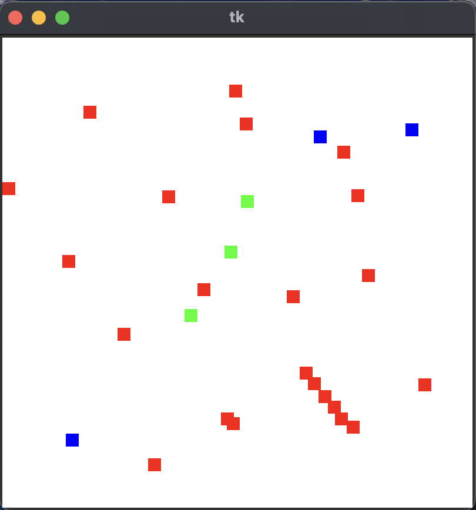
○考察
今回はマウスのボタンが押されるたびに、カーソル位置の座標を取得しボタンの種類により異なる色の正方形を描画するプログラムを「Python 3.11.7, Sonoma 14.4.1」で走らせた。
実行結果は上のようにボタンの種類によって異なる色の正方形がプロットでき、eventオブジェクトのフィールドから情報を得られることが視覚的に理解できた。
今回のプログラムの実行を通してeventオブジェクトの他のフィールドフィールドについて気になったため、以下に示すpython公式ドキュメントを参考にして、次のセクションでプログラムを実行していこうと思う。
参考サイト
□課題4.0 - 4.3節 例 2-2: イベントオブジェクトのtypeフィールド event_type.py
○プログラムリスト
1 from tkinter import * # tkinterモジュールのimport
2
3 W, H = (200, 200) # canvasの幅と高さ
4
5
6 def pressed(event): # Button1 pressed コールバック関数
7 global canvas
8 canvas.create_rectangle((2, 2), (W+3, H+3), outline='', fill='#ff0000')
9 canvas.create_text(W/2, H/2, text='Event Type: ' + event.type, fill='white')
10
11
12 def released(event): # Button1 released コールバック関数
13 global canvas
14 canvas.create_rectangle((2, 2), (W+3, H+3), outline='', fill='#00ff00')
15 canvas.create_text(W/2, H/2, text='Event Type: ' + event.type, fill='white')
16
17
18 def main(): # main関数
19 global canvas # 大域変数 canvas
20 root = Tk() # ルートフレームの作成
21 canvas = Canvas(root, width = W, height = H, bg='#00ff00') # canvasの作成
22 canvas.pack() # canvasの配置確定
23 canvas.bind('', pressed) # Button1 pressed コールバック関数
24 canvas.bind('', released) # Button1 released コールバック関数
25 root.mainloop() # ルートフレームの実行ループ開始
26
27
28 if __name__ == '__main__': # 起動の確認 (コマンドラインからの起動)
29 main() # main関数の呼出
○実行コマンド
$ python event_type.py
○実行結果
ボタンを押した時に、"Event Type: 4"、離した時に"Event Type: 5"が表示された。
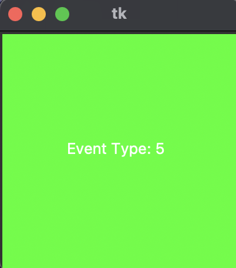
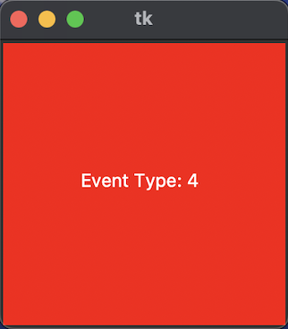
○考察
今回は、マウスをクリック、または離すたびにイベントオブジェクトのtypeフィールドを表示するプログラムを「Python 3.11.7, Sonoma 14.4.1」で走らせた。
例題2でイベントオブジェクトのフィールドからイベントに関する情報が得られることを学んだため、他のフィールドを試してみようと思った。実行結果は上の様で、ボタンを押した時に4、離した時に5が得られた
イベントに関する様々な情報が得られれば、マウスの動きによりUIを変化させられ、よりインタラクティブなデスクトップアプリが作成できそうだと思った。
□課題4.0 - 4.3節 例 3: マウスによる線分の描画 rubberband.py
○プログラムリスト
(例題なので省略)
○実行コマンド
$ python rubberband.py
○実行結果
(文字列の表示なし)
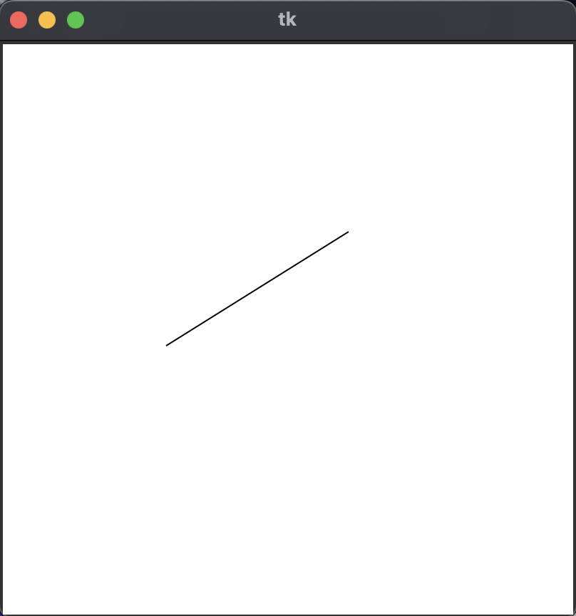
○考察
今回は、マウスをドラッグすることでマウスの動きに合わせた線分を描くことができるプログラムを「Python 3.11.7, Sonoma 14.4.1」で走らせた。最初にマウスボタンをプレスした位置を大域変数として共有することにより、ドラッグしていている間に新しい線分を弾き続けることができる。
実行結果は上の様であり、マウスをクリックしてからドラッグしている間、カーソルの位置とクリック位置を結ぶ線分を1本更新して書き続けた。常に1本なのはマウスをドラッグしている間のコールバック関数であるdragged内で常にcreate_rectangleでcanvasを初期化しているからである。
実行を終えて、""を用いて、canvas.create_rectangleでのcanvasの初期化をコメントアウトすれば幾何学的な図形がかけると思ったので、次のセクションで考察を記す。
□課題4.0 - 4.3節 例 3-2: マウスによる複数の楕円の描画 consecutiveoval.py
○プログラムリスト
1 from tkinter import *
2
3 W, H = (400, 400)
4
5
6 def pressed(event):
7 global startX, startY
8 startX, startY = (event.x, event.y)
9
10
11 def dragged(event):
12 global canvas, startX, startY
13 # canvas.create_rectangle((2, 2), (W+3, H+3), outline="", fill="#ffffff")
14
15 x, y = (event.x, event.y)
16 canvas.create_oval((startX, startY), (x, y), outline="black", width=1)
17
18
19 def main():
20 global canvas
21 root = Tk()
22 canvas = Canvas(root, width=W, height=H, bg="#ffffff")
23 canvas.pack()
24 canvas.bind("", pressed)
25 canvas.bind("", dragged)
26 root.mainloop()
27
28
29 if __name__ == "__main__":
30 main()
○実行コマンド
$ python consecutiveoval.py
○実行結果
(文字列の表示なし)
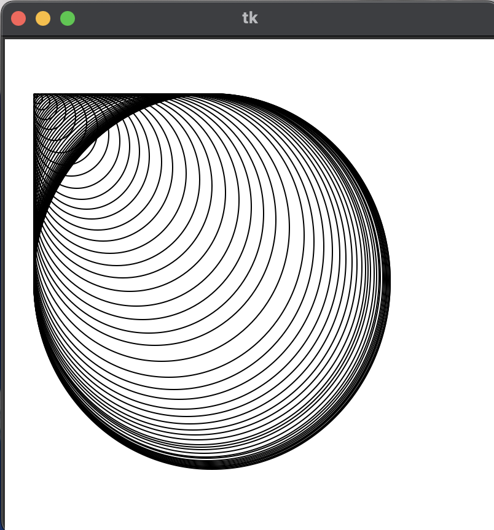
○考察
今回は、マウスがプレスされた位置とドラッグされたカーソルの位置をcreate_ovalの引数として渡し、マウスの移動に沿って複数の楕円を描くプログラムを「Python 3.11.7, Sonoma 14.4.1」で走らせた。
canvasの左上から右下へカーソルを移動させた結果は上の様で、一定間隔で楕円が描かれた。
興味深かったのは、マウスで描いた図形であるのにも関わらす、描いた図形の左上に直角が現れたことだ。課題2.0章末問題のネフロイドの描画（円による）でも同じように直線が図形に現れた。今回のケースでは、描かれるすべての楕円が共通の左上の一点を引数に持つので、その一点を通るすべての楕円の接線は共通であることが原因であると考える。
□課題4.0 - 4.3節 例 4: マウスを用いたお絵描き draw.py
○プログラムリスト
(例題なので省略)
○実行コマンド
$ python draw.py
○実行結果
(文字列の表示なし)
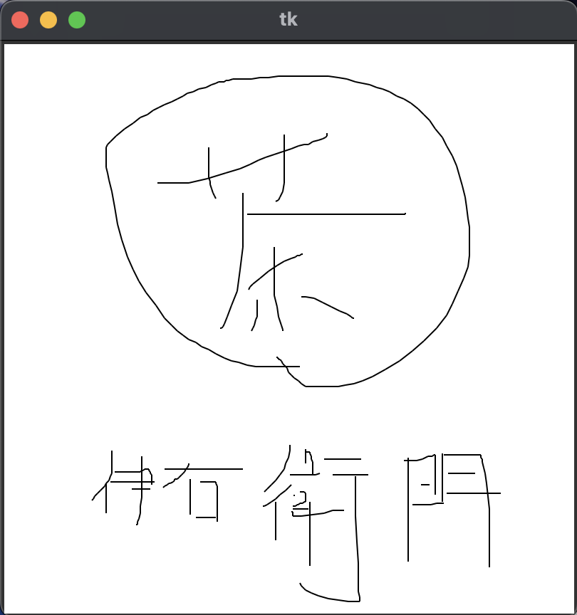
○考察
今回は、マウスカーソルの移動に沿って次々に短い線分を描画することで、お絵かきができるプログラムを「Python 3.11.7, Sonoma 14.4.1」で走らせた。
実行結果は上の様で、任意の図形が描けた。これはコールバック関数のdragged内で、線分の端点となるoldX, oldYの座標を更新し続けているからである。
実行を終えて、apple pensilでipadにお絵描きをするのも同じ原理であると考えたため、tkinterでより高度なお絵描きアプリを再現できるか気になった。次のセクションで考察を記す。
□課題4.0 - 4.3節 例 4-2: マウスを用いたお絵描き（高度） draw2.py
○プログラムリスト
1 from tkinter import *
2
3
4 def pressed_black(event):
5 global oldX, oldY
6 oldX, oldY = (event.x, event.y)
7
8
9 def dragged_black(event):
10 global canvas, oldX, oldY
11 x, y = (event.x, event.y)
12 canvas.create_line((oldX, oldY), (x, y), fill="black")
13 oldX, oldY = (x, y)
14
15
16 def pressed_red(event):
17 global oldX, oldY
18 oldX, oldY = (event.x, event.y)
19
20
21 def dragged_red(event):
22 global canvas, oldX, oldY
23 x, y = (event.x, event.y)
24 canvas.create_line((oldX, oldY), (x, y), fill="red")
25 oldX, oldY = (x, y)
26
27
28 def pressed_erase(event):
29 global oldX, oldY
30 oldX, oldY = (event.x, event.y)
31
32
33 def dragged_erase(event):
34 global canvas, oldX, oldY
35 x, y = (event.x, event.y)
36 canvas.create_rectangle((oldX, oldY), (x, y), fill="white")
37 oldX, oldY = (x, y)
38
39
40 def main():
41 global canvas
42 W, H = (400, 400)
43 root = Tk()
44 canvas = Canvas(root, width=W, height=H, bg="#ffffff")
45 canvas.pack()
46 canvas.bind("", pressed_black)
47 canvas.bind("", dragged_black)
48 canvas.bind("", pressed_red)
49 canvas.bind("", dragged_red)
50 canvas.bind("", pressed_erase)
51 canvas.bind("", dragged_erase)
52 root.mainloop()
53
54
55 if __name__ == "__main__":
56 main()
○実行コマンド
$ python draw2.py
○実行結果
(文字列の表示なし)
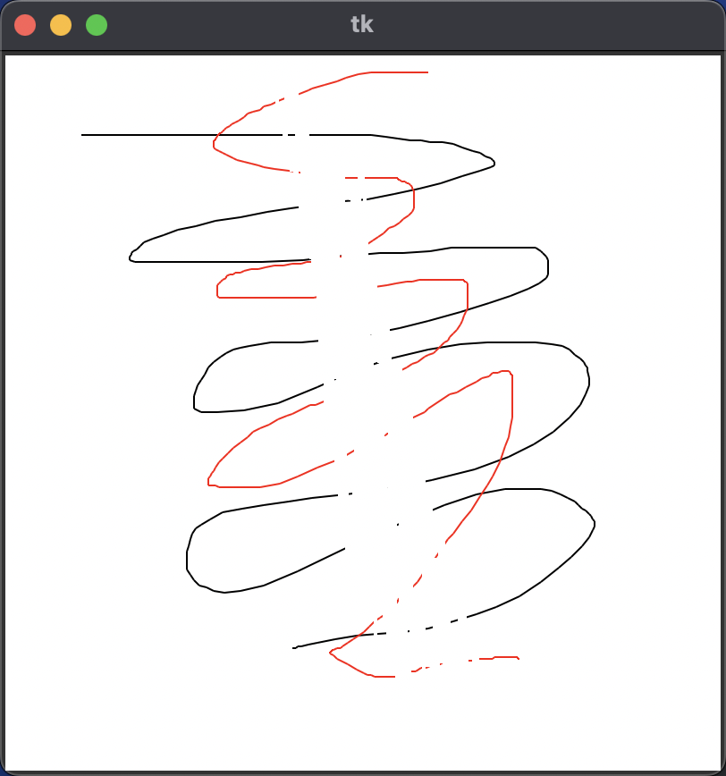
○考察
今回は、左クリックでマウスをドラッグした場合は黒色で、右クリックの場合は赤色、シフトクリックの場合は消しゴム機能を使えるような高度のお絵描きができるプログラムを「Python 3.11.7, Sonoma 14.4.1」で走らせた。
プログラムとしては左・右クリックの場合のコールバック関数をそれぞれ作成し、fillパラメタの指定を変えた。消しゴム機能は、whiteの四角形を描くことで再現した。実行結果は上の様に、黒、白で描いた絵の真ん中を消しゴムで消している。
今回のプログラムではボタンの押し方によって区別したが、canvas上にボタンを配置して、大域変数としてfillcolor{string}、iserase{bool}を指定すれば、もっと多機能なお絵描きアプリが再現できるだろうと考えた。
□課題4.0 - 章末課題 : マウスイベントの確認 mouseevent.py
○プログラムリスト
1 from tkinter import *
2
3 W, H = (200, 200)
4
5
6 def pressed(event):
7 global canvas
8 canvas.create_rectangle((2, 2), (W+3, H+3), outline='', fill='#ff0000')
9
10
11 def released(event):
12 global canvas
13 canvas.create_rectangle((2, 2), (W+3, H+3), outline='', fill='#00ff00')
14
15
16 def entered(event):
17 global canvas
18 canvas.create_rectangle((2, 2), (W+3, H+3), outline='', fill='#0000ff')
19
20
21 def left(event):
22 global canvas
23 canvas.create_rectangle((2, 2), (W+3, H+3), outline='', fill='#ffff00')
24
25
26 def main():
27 global canvas
28 root = Tk()
29 canvas = Canvas(root, width=W, height=H, bg='#ffffff')
30 canvas.pack()
31 canvas.bind('', pressed)
32 canvas.bind('', released)
33 canvas.bind('', entered)
34 canvas.bind('', left)
35 root.mainloop()
36
37
38 if __name__ == '__main__':
39 main()
○実行コマンド
$ python mouseevent.py
○実行結果
(文字列の表示なし)
{
初期状態：白
マウスボタンのプレス：赤
マウスボタンのリリース：緑
マウスカーソルの進入：青
マウスカーソルの退出：黄
}
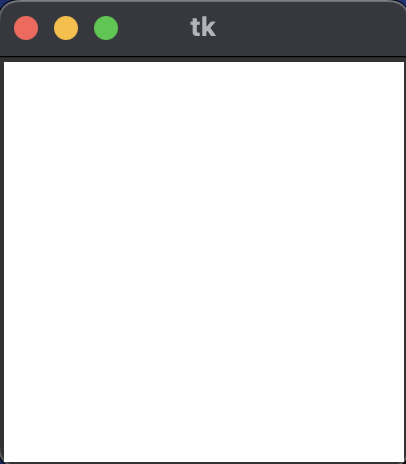
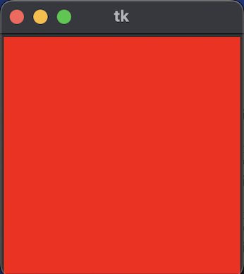
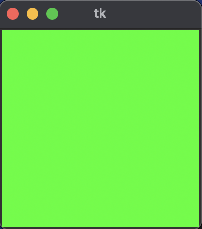
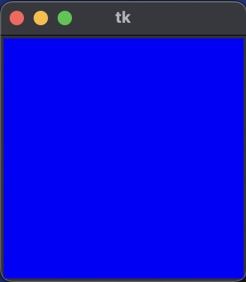
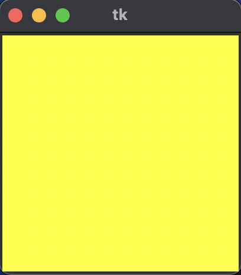
○考察
今回は、マウスイベントによって4種類（初期状態含め5種類）の背景色に変更するプログラムを「Python 3.11.7, Sonoma 14.4.1」で走らせた。
実行結果は上の様に、イベントの種類によって5種類の背景色のcanvasが得られた。
気になった点は、マウスボタンをプレスした後、マウスカーソルがcanvasの中に入っているのにも関わらず、背景色は赤である点だ。実行前の推測として、マウスカーソルの進入はマウスカーソルがcanvas内に入っていることを表すのかと思っていたのだが、実際はcanvasの境界線をマウスカーソルが跨ぐことを表すことがわかった。
□課題4.0 - 章末課題 : マウスによる円の描画 rubberoval.py
○プログラムリスト
1 from tkinter import *
2
3 W, H = (400, 400)
4
5
6 def pressed(event):
7 global startX, startY
8 startX, startY = (event.x, event.y)
9
10
11 def dragged(event):
12 global canvas, startX, startY
13 canvas.create_rectangle((2, 2), (W+3, H+3), outline="", fill="#ffffff")
14 x, y = (event.x, event.y)
15 r = ((x - startX)**2 + (y - startY)**2)**0.5
16 canvas.create_oval((startX-r, startY-r), (startX+r, startY+r), outline="black", width=1)
17
18
19 def main():
20 global canvas
21 root = Tk()
22 canvas = Canvas(root, width=W, height=H, bg="#ffffff")
23 canvas.pack()
24 canvas.bind("", pressed)
25 canvas.bind("", dragged)
26 root.mainloop()
27
28
29 if __name__ == "__main__":
30 main()
○実行コマンド
$ python rubberoval.py
○実行結果
(文字列の表示なし)
マウスをクリックした位置を中心に1つの円がマウスカーソルの移動によって拡大縮小した
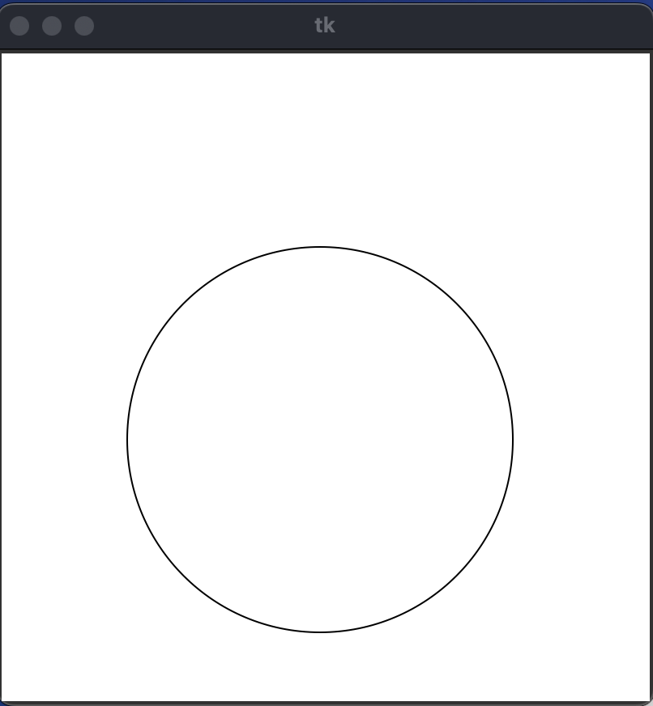
○考察
今回は、マウスボタンをプレスした位置を円の中心として、マウスカーソルの移動によって拡大縮小する円を描画するプログラムを「Python 3.11.7, Sonoma 14.4.1」で走らせた。
15行目によって、マウスカーソルの位置とマウスボタンをプレスした位置の距離を測り、16行目でその距離を半径にもつ円を描画した。実行結果は上の様に、マウスカーソルの移動に応じて拡大縮小する円が描画できた。
今回は円の描画のプログラムを書いたが、circle.pyをインポートしても動作したと思う。今回はインポートする考えに至らなかったが、今後は効率化のため考慮に入れておきたい。
□課題4.0 - 章末課題(参考) : プログラムの改良 clickSpeedModified.py
○プログラムリスト
1 from tkinter import Tk, Canvas
2 import random
3 import time
4
5
6 class ClickSpeedGame:
7 def __init__(self):
8 self.W, self.H = (400, 400)
9 self.R = 5
10 self.TIMES = 10
11 self.count, self.fastest = (0, -1)
12 self.error = False
13 self.ttime = None
14 self.x = None
15 self.y = None
16 self.root = Tk()
17 self.canvas = Canvas(self.root, width=self.W, height=self.H, bg='#ffffff')
18 self.canvas.pack()
19 self.canvas.bind('', self.pressed1)
20 self.canvas.bind('', self.released2)
21
22 def display(self):
23 self.x = random.randint(2+self.R, self.W+2-self.R)
24 self.y = random.randint(2+self.R, self.H+2-self.R)
25 self.canvas.create_rectangle((2, 2), (self.W+3, self.H+3), outline='', fill='#ffffff')
26 if self.error:
27 self.canvas.create_rectangle((self.x-self.R, self.y-self.R), (self.x+self.R, self.y+self.R), outline='', fill='#ff0000')
28 else:
29 self.canvas.create_rectangle((self.x-self.R, self.y-self.R), (self.x+self.R, self.y+self.R), outline='', fill='#000000')
30
31 def pressed1(self, event):
32 if self.count > 0:
33 xc, yc = (event.x, event.y)
34 if self.x - self.R <= xc <= self.x + self.R and self.y - self.R <= yc <= self.y + self.R:
35 self.error = False
36 self.count = self.count - 1
37 else:
38 self.error = True
39 self.count = self.count + 1
40 if self.count > 0:
41 print(self.count, 'more!!')
42 self.display()
43 else:
44 self.ttime = time.time() - self.ttime
45 if self.fastest < 0 or self.ttime < self.fastest:
46 self.fastest = self.ttime
47 print('Finished in', self.ttime, 'secs. Fastest time:', self.fastest, 'secs.')
48 else:
49 if self.fastest < 0:
50 print('Click right button to start.')
51 else:
52 print('Click right button to start. Fastest time:', self.fastest, 'secs.')
53
54 def released2(self, event):
55 self.error = False
56 self.count = self.TIMES
57 print('Start clicking ...', self.count, 'more!!')
58 self.ttime = time.time()
59 self.display()
60
61 def main(self):
62 self.root.mainloop()
63
64
65 if __name__ == '__main__':
66 game = ClickSpeedGame()
67 game.main()
○実行コマンド
$ python clickSpeedModified.py
○実行結果
(base) irisakeishi@Irisas-MacBook-Air Chap04 % python clickSpeedModified.py
Start clicking ... 10 more!!
9 more!!
8 more!!
7 more!!
6 more!!
5 more!!
4 more!!
3 more!!
2 more!!
1 more!!
Finished in 13.131102800369263 secs. Fastest time: 13.131102800369263 secs.
Click right button to start. Fastest time: 13.131102800369263 secs.
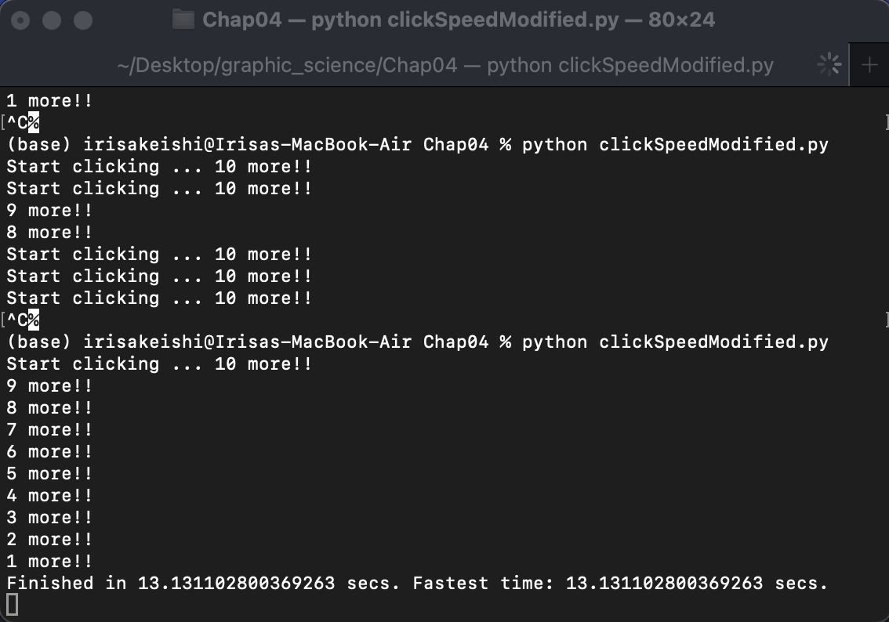
○考察
今回は、指定された回数内に最速で、canvas内に表示されるマーカーをクリックして、その最速記録を競うゲームのプログラムを「Python 3.11.7, Sonoma 14.4.1」で走らせた。
与えられたプログラムをClickSpeedGameというクラスに改良しました。与えられたコードでは、関数がそれぞれ独立していて、理解がしにくかったので、データと操作をカプセル化できるクラスに書き換えました。また__init__で初期値を管理することで、ゲームの条件の変更・管理を容易にしました。
初めてゲームのプログラムを書いてGUIで実行することができました。特にキーボードのボタンによってイベントを分けられることが便利で、キーボードごとにコールバック関数を変えれば、より多機能なゲームが作れそうと思った。
□課題や授業に関して
○レポート作成に要した時間
4h
○特に苦労した点
同じプログラムコードでも、イベントが正しく発火する時としないときがあって実行に時間がかかった。プログラムを再実行するなどをして対処した。
○授業についての感想や希望
GUIでのインタラクティブな操作に入ってきて、非常に面白い。今回の改良問題のような日常生活でなじみがあるプログラムを触れる問題をもっと試していきたいと思いました。